UBUNTU SERVER
¿Qué es?
ProMox es un servidor que administra maquinas virtuales a través de una interfaz web, se instala como sistema operativo utilizando la distribución GNU/Linux Debian.
¿Para qué se usa?
En nuestro caso, nos sirve para montar un servidor web y en el instalar diferentes servicios.
Instalación y configuración
Ir a nuestro dominio y pinchar en local, al hacerlo os aparecera la siguiente ventana:
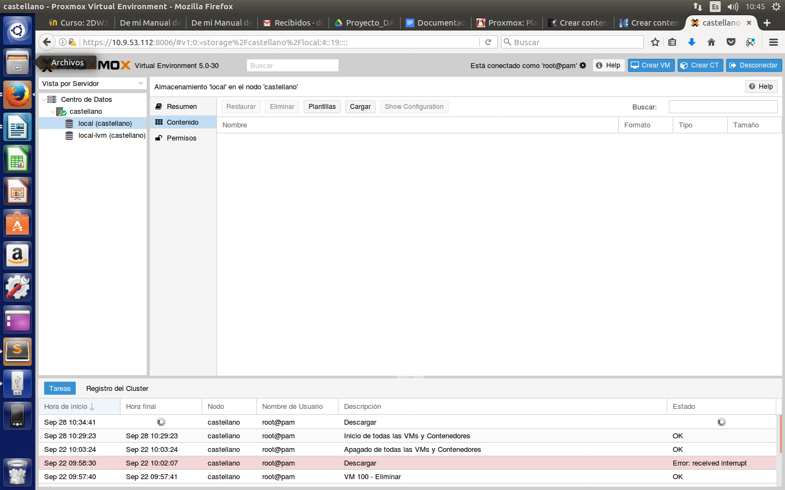
Pinchamos en plantillas y seleccionamos la que queramos escoger que en nuestro caso va a ser la versión Ubuntu 17.04.
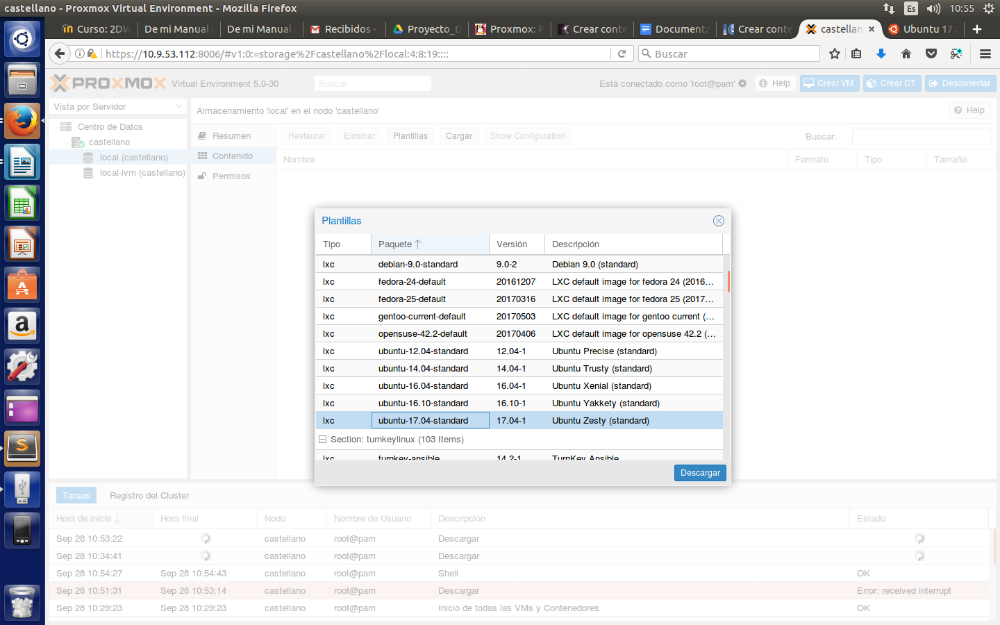
Una vez esté descargada procedemos a crear un contenedor, para ir a la creación de el hay que hacer click aquí.
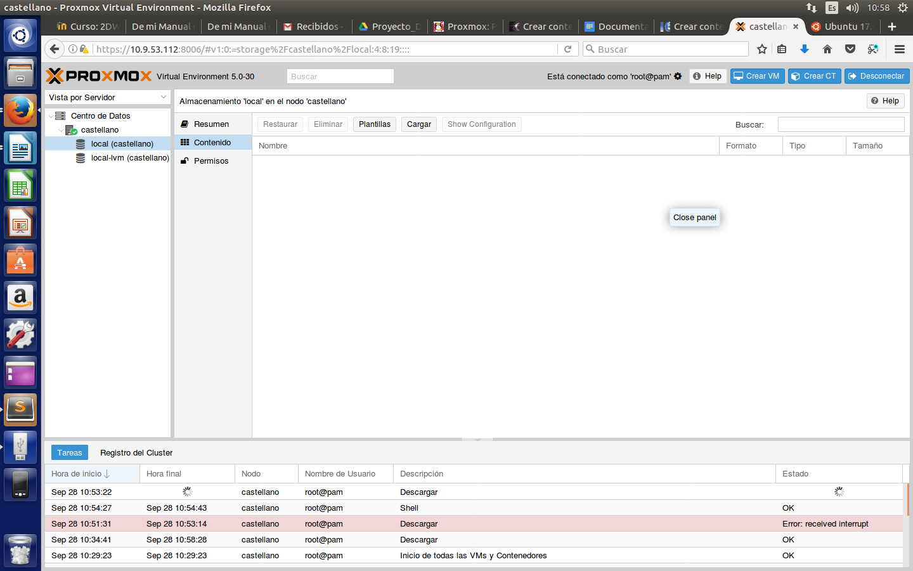
Creación e instalación en el contenedor
Una vez esté descargada la plantilla, procederemos a crear nuestro contenedor. Para ello, hay que pinchar en la esquina superior sobre el boton creat CT.
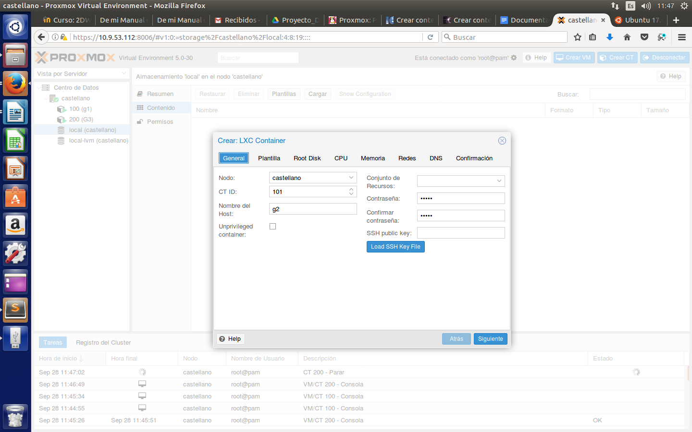
Se te abrira una pestañita como esta, rellenar por lo menos la parte de host y la contraseña.
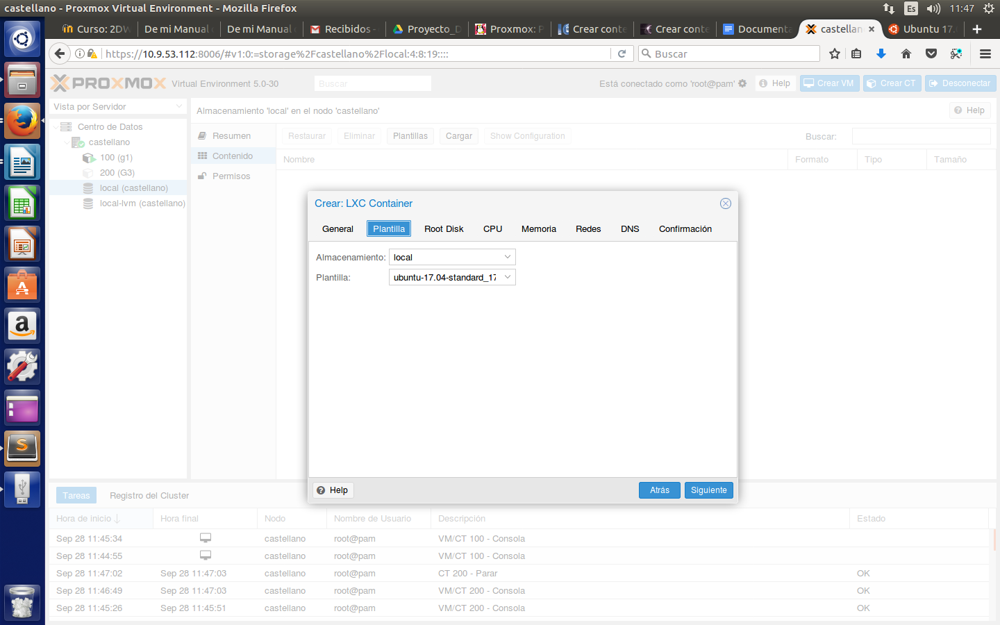
Cuando esté rellenada hacer click en plantilla o siguiente, seleccionamos la plantilla que hayamos descargado.
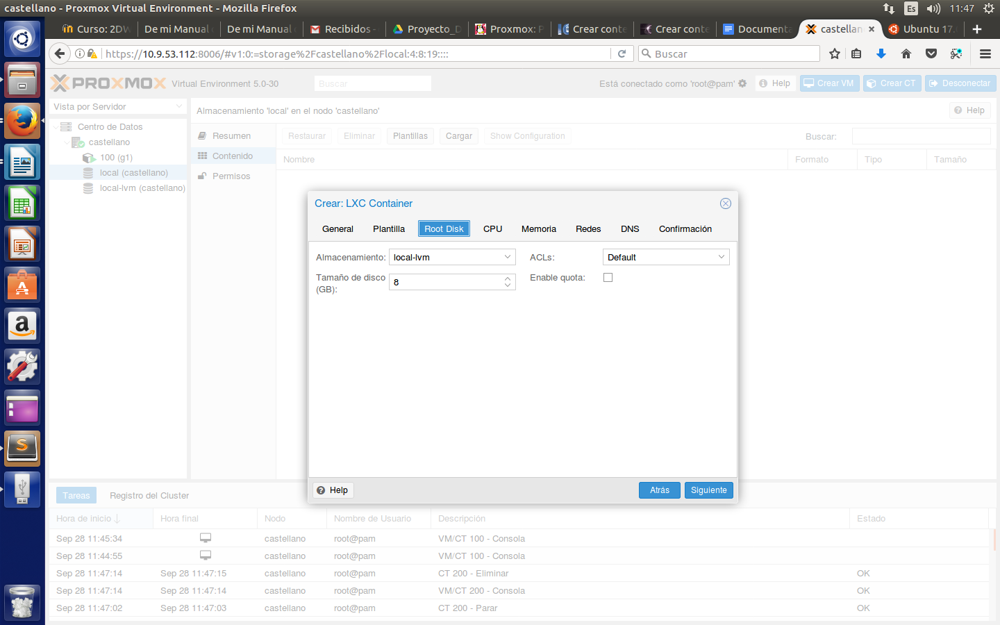
Cuando esté seleccionada la plantilla hacer click en root disc, damos el tamaño de disco y continuamos haciendo click en CPU o siguiente.
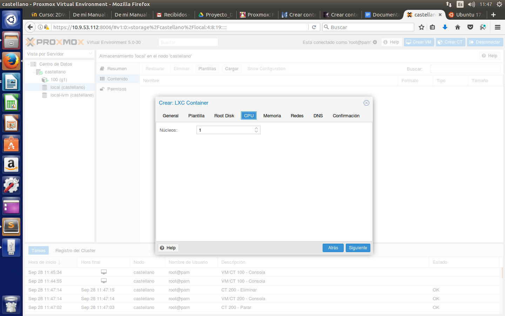
Elegir cuantos nucleos queremos coger del procesador y hacemos click en Memoria o siguiente.
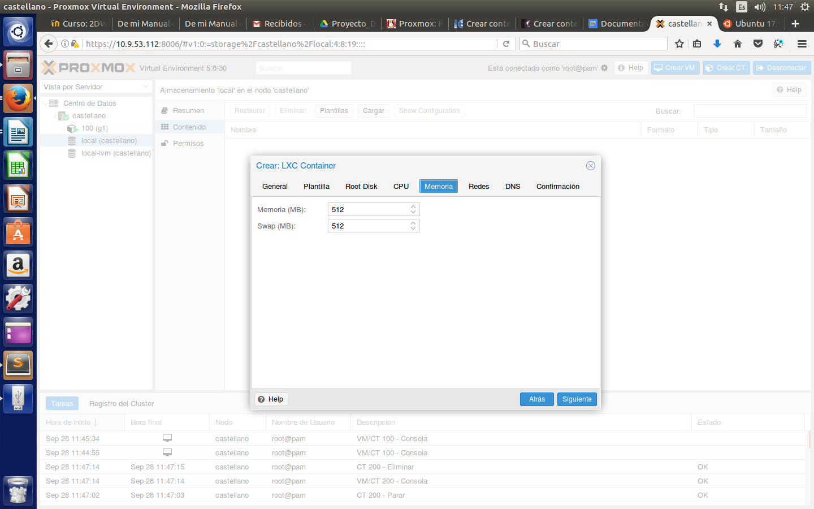
Elegimos cuanta memoria RAM queremos que coja y hacemos click en Redes o siguiente.
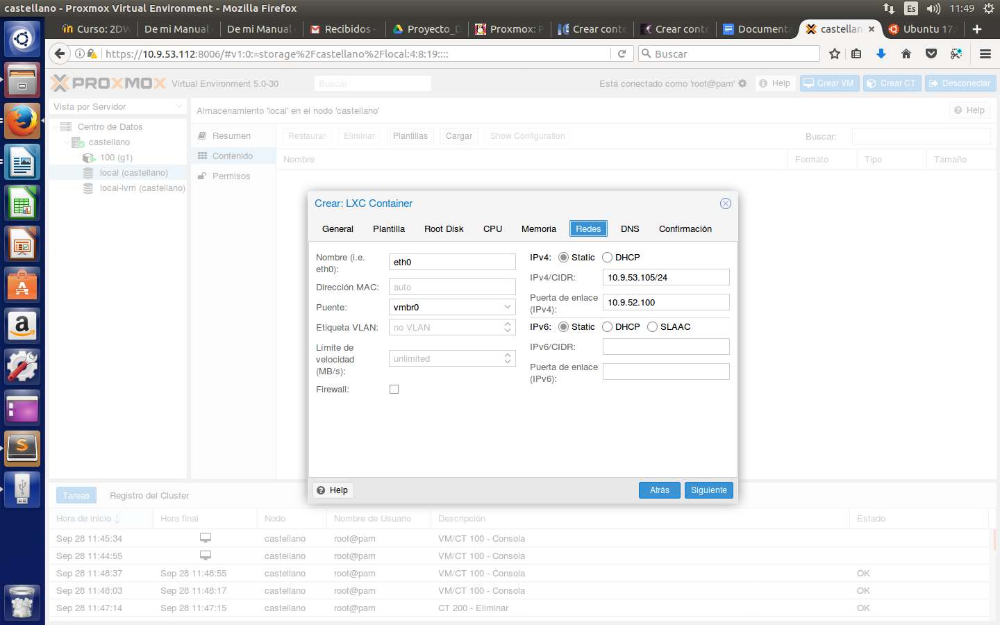
Aquí rellenamos la parte de IPV4 y puerta de enlace, una vez rellenado hacemos click en DNS o siguiente.
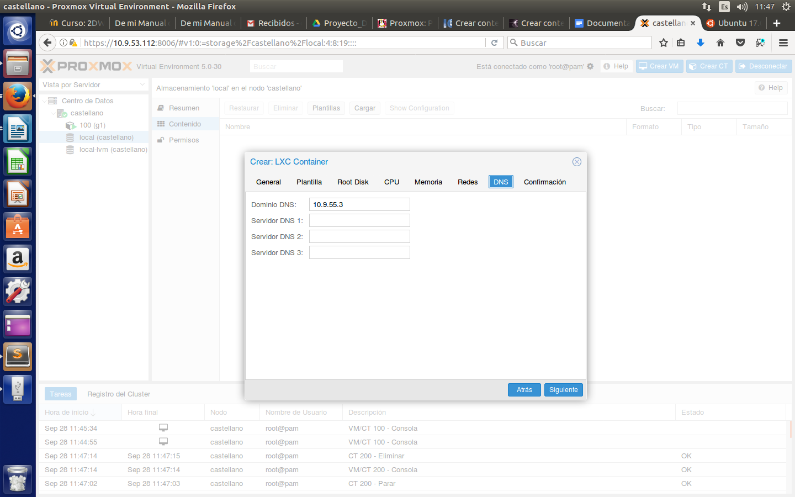
Metemos nuestro DNS y hacemos click en confirmación o siguiente.
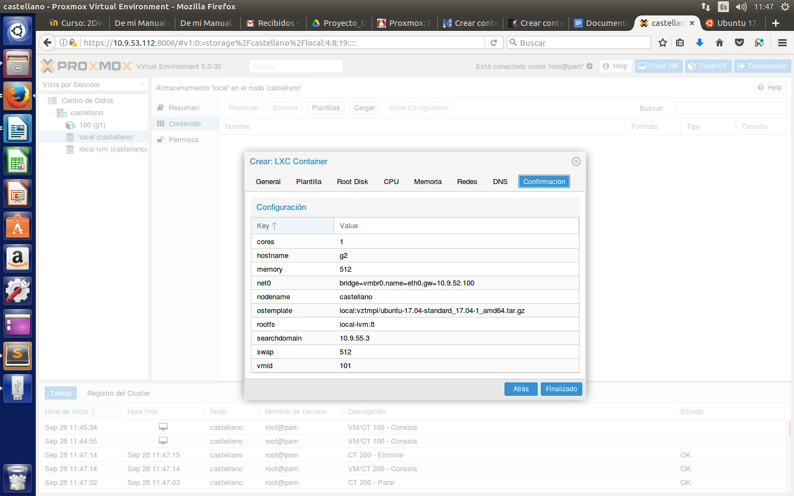
Revisar si todo está correcto y hacer click en finalizado.
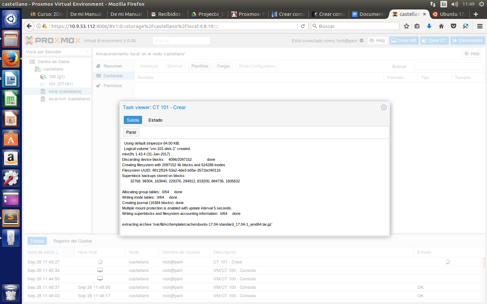
Esperar hasta que deje de procesar todo(tarda poco), cuando acabe cerrar esta ventana.
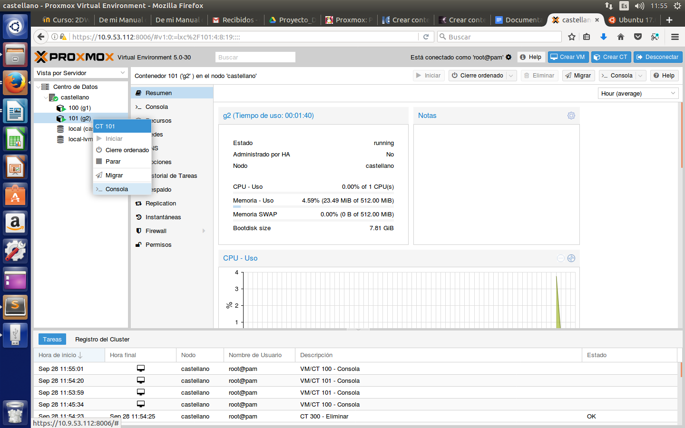
Cuando ya haya acabado hacemos click derecho en nuestro contenedor y le damos a consola.
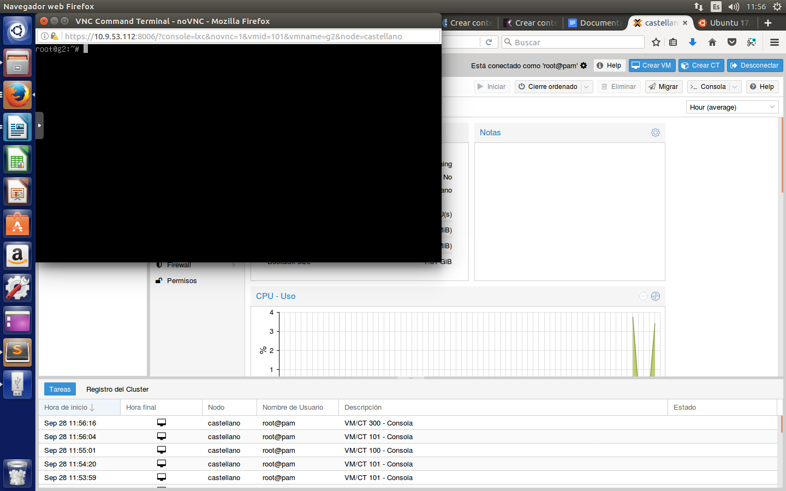
Una vez se haya abierto la cuenta será root(viene predefinida así) y la contraseña la que hayamos puesto en pasos anteriores.